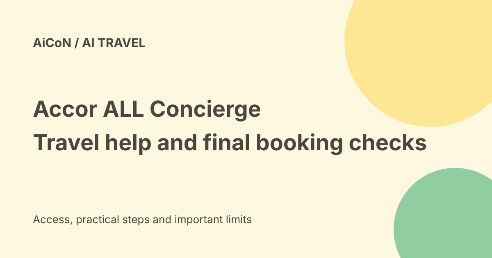

Accor ALL Concierge: travel help, channel limits and booking checks
Accor announced the full launch of ALL Concierge on 24 September 2026. It helps guests discover hotels, compare options, ask property questions and move into a booking flow. Current features and channel availability are narrower than some launch headlines suggest.

What can it help with?
Accor's launch FAQ lists hotel inspiration, research and comparison, property information, booking transition, questions about existing reservations, real-time support and member recognition.
It can be useful for asking about breakfast times, a hotel's spa or an existing booking. AI answers still need checking when an amenity, accessibility requirement or cancellation term determines your choice.
Website, app and messaging
The announcement describes access through ALL.com, the ALL Accor app, WhatsApp and iMessage. The FAQ says the website supports eleven languages.
The same FAQ says the app is currently available in four languages across five points of sale, with further deployment planned by year-end. Do not turn the headline's eleven-language claim into support on every app account or market.
India access and language
The checked announcement does not identify the app's five points of sale or confirm Malayalam support. It therefore does not establish that every Indian app account already has the same experience.
Start with the official ALL website or app and inspect the feature available to your account. Use a messaging route linked by Accor rather than an unrelated number advertising itself as the concierge. No WhatsApp number was independently verified for this guide.
Booking transition versus in-chat changes
Launch wording describes booking confirmation, while the detailed current-feature list uses booking transition and reservation questions. The roadmap separately lists modifying or cancelling bookings directly in the conversation.
That distinction matters. Do not assume a chat statement has changed your reservation. Verify the stored booking and its confirmation through the official booking system.
What is still planned?
The FAQ puts advanced comparisons, loyalty-benefit suggestions, partner-account links, activity booking with points, in-chat modifications and cancellations, invoice retrieval and voice features on its future list.
A roadmap is not proof that those actions work today for your hotel. Check current service details before relying on a planned feature.
Price and free-versus-paid verdict
The launch material does not state a separate consumer concierge subscription price. That does not make a hotel stay, spa service or points booking free.
Room prices depend on dates, guests, room type and rate terms. Verify the final total, taxes, payment schedule, cancellation window and any deposit before confirming. Points have value too.
A useful first conversation
- Open the official ALL website or app.
- State your destination, dates and number of guests.
- Ask for suitable properties and the reasons for each choice.
- Ask the hotel-specific questions that matter to you.
- Compare the answer with the actual property and rate page.
- Complete a booking only after checking the final offer.
- Keep the confirmation and verify later changes in the booking record.
No hotel search for a particular traveller, reservation or payment was made for this guide.
When a person should take over
Accor says complex requests can be passed to human agents. Ask for a person if the bot cannot settle a booking problem, accessibility requirement or conflicting rate information.
A fast reply is useful, but speed does not prove that a reservation changed or a refund was approved. Keep the relevant confirmation or support case reference.
Personalisation and privacy
Accor says returning guests can receive help based on preferences, previous stays and loyalty information. That is a reason to read the account and channel privacy terms.
Share only what is needed. Do not send payment-card details, passport copies or unrelated private information just because a conversational interface asks broadly for travel context. Use the official secure flow when documentation is required.
Vendor claims and The Butler
Accor describes its rollout as the first of its kind at scale and says the pilot involved more than a million conversations. Those are company claims, not independent performance results.
The Butler is a separate assistant for hotel staff. A staff-support product does not establish extra features in the guest concierge.
What changed since the original post?
We add the app's four-language/five-point-of-sale limits and distinguish current booking transitions from planned in-chat changes. The guide avoids treating future features or the scale claim as verified universal access.
Frequently asked questions
Can I assume my booking was cancelled in chat?
No. Verify the booking record and cancellation confirmation.
Does every channel support eleven languages?
The launch FAQ gives narrower app availability.
Is Malayalam confirmed?
Not in the checked material.
Sources: Accor official launch and detailed FAQ · Independent launch analysis. Checked 7 October 2026.